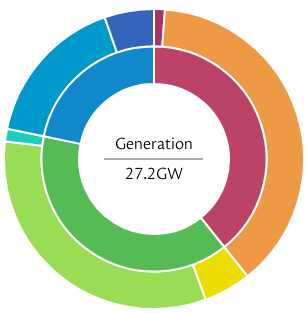

Introduction
A web site about climate change. It uses a model from the Be The Change Initiative:
- Where are we?
- How did we get here?
- What is possible now?
- Where do we go from here?
A web site about climate change. It uses a model from the Be The Change Initiative:
Just a bunch of references
Start with What is possible now, and How did we get here. These are the most out of date in the original BTCI work, and they seem to be the most overlooked.
There has been a disconnect between
These are not separate things, they need to be re-connected.
A new paradigm is coming. It has to come, because the old way is dying. The new way will solve many of the problems that the old way created. Let go of the old.
However the new way is scary. Especially for those of us that can see it coming. It is scary because much of what we learnt in the old way, is useless or wrong in the new way. We have to unlearn, and we need to learn new things.
It will seem at first that everything that you know will have to be unlearnt. Do not worry, you are a good learner, and not everything has to be un-learnt. Many of the thinking strategies will still be of use. And, the laws of physics will not change; only how you apply them.
I can not tell you what to do. I am but a fellow traveller. I can guide you, You can guide me, as we travel together.
Nothing in this section yet. I am working on other sections first.
Choose another section.
See Video
Fully charged show
Renewable electricity is inevitable We just need to get out of the way. Texas is the USA state with the most renewable. It also has the least renewable incentives and regulation (for fossil fuel and renewable). Renewables are wining on economic reasons alone.
UK electricity generation is already averaging over 30% over a year. On some days fossil fuels are less that 10%.
Last year it was 35.8% renewable (The green inner ring is renewable). 
(needs more work: images etc)
Our current way of designing roads is not best for cycling, walking or Driving. We need to do better for all users.
Most actions that make it better for walking, cycling, or public transport, also make it better for driving. However there are other things that can be done to improve driving, without sacrificing other modes.
The Netherlands has, was once a car ridden hell-scape. However, it is now the cycling and walking capital of the world, and also a nice place to drive. Thanks to prioritising walking and cycling, they have made it a much better place for walking, cycling, and driving.
Some of the things that they did are: separate travel routes into roads and streets. A road if for getting some where, a street is a destination.
See where to use Roundabouts, where not to use them, and what type.
Listen to a designer explain how they did it
Read the design manuals that they created: Crow design manual (Netherlands).
The country of Norway has sales of vehicles at over 90% electric. The city of Oslo is going farther:
1.3.1 A greener and more attractive city
Oslo must be an attractive metropolis and capital city. The design of the streets should reinforce the role and identity of the urban fabric. The dense and multi-purpose city should be extended into new areas. The streets constitute a large part of the urban public spaces. They are integral elements if we are to achieve the goals adopted in the Municipal Plan and the Climate Strategy (City of Oslo 2019 and 2020). As stated in the Architecture Policy adopted in 2020, the street should be recognised as one of the most important communal spaces of the city. A city that prioritises good city life will prioritise street areas for pedestrians, cyclists, public transport and public spaces. Furthermore, adequate space must be set aside for deliveries and transport of people with disabilities. Oslo aims to be a green city. Green spaces are important social arenas with a big influence on public health. Green spaces can support biodiversity, provide important carbon stores in the vegetation and soil, clean the air and assist in stormwater management and temperature regulation. Green spaces must therefore be incorporated into plans and projects more extensively than in the past. The design of the streets has a major bearing on the quality of life for the people moving through- and spending time in the City of Oslo. Extract from the Street design manual Oslo
RethinkX shows how we can fix 90% of the climate-change emissions in less than 15 years. They give us 3 areas of focus:
It is the first plan, that I feel will work, and is worth doing even if there is no climate-change. It will make thinks cheaper: for example there renewable energy plan, uses only economic argument. It is the cheapest solution (cheaper than: all fossil fuels), and provides secondary benefits. The only entities that will be worse off are fossil fuel companies.
content guide will go here
We follow the single responsibility principle. The site is made of separate parts.
For now. File names can not have spaces. Use a _